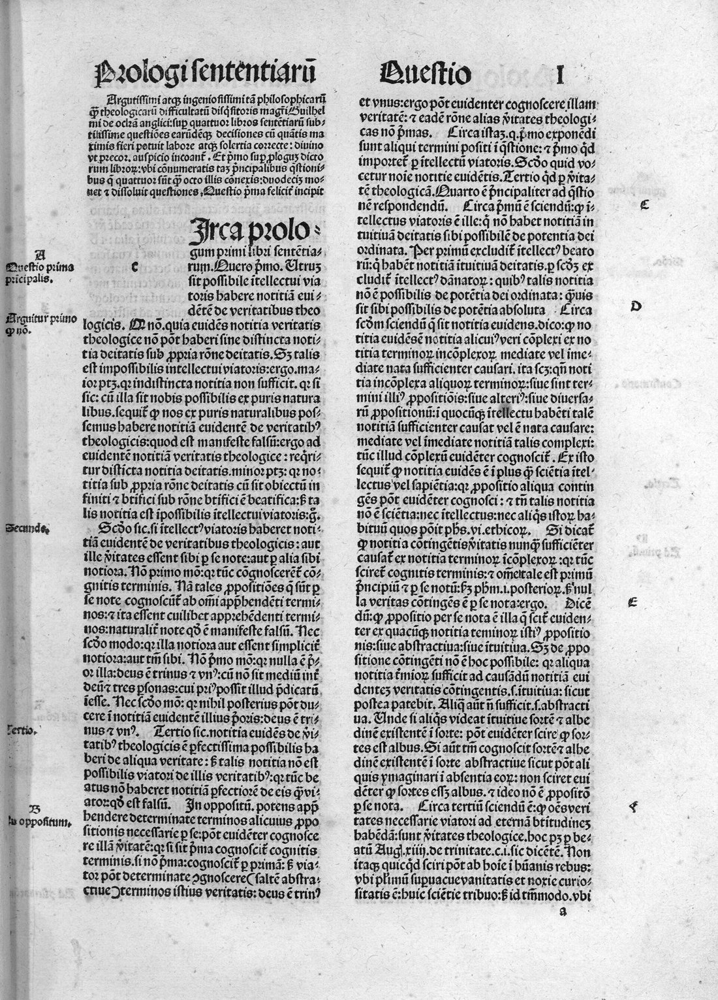
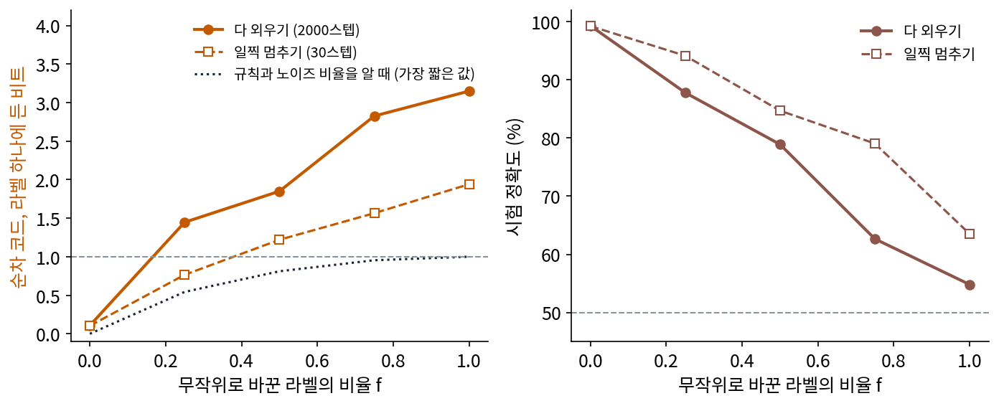
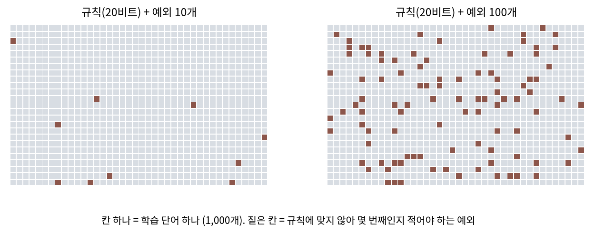
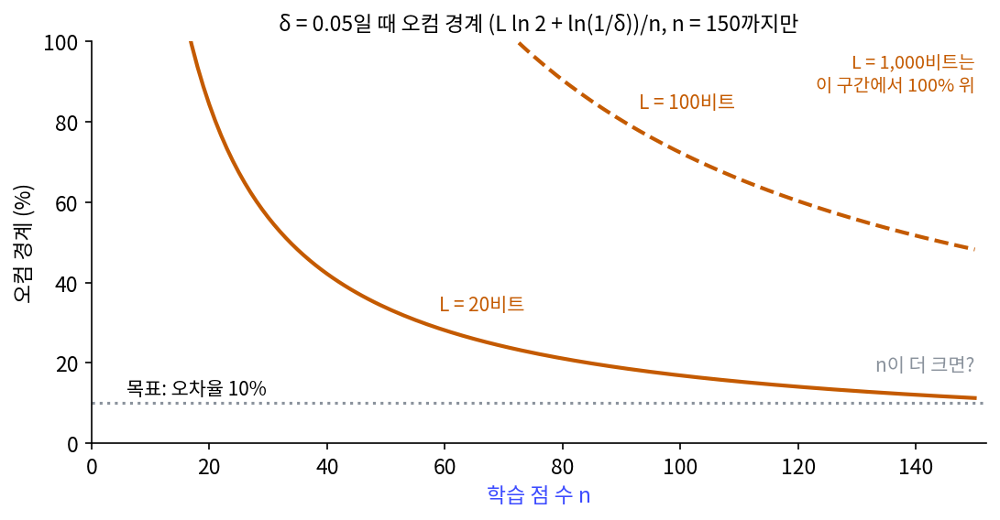
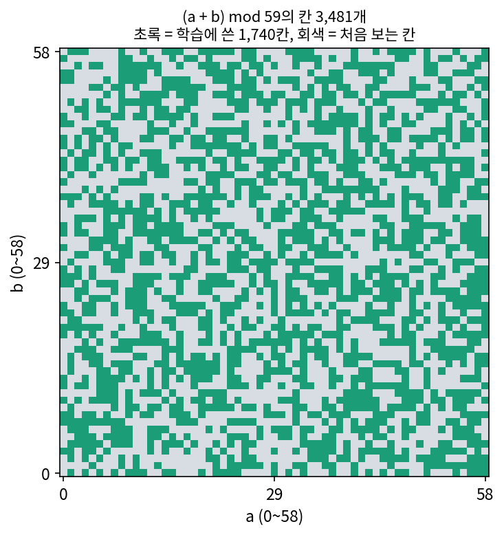

오컴 경계: 짧은 설명만이 처음 보는 자료를 말한다
참 라벨과 무작위 라벨은 양 끝이고, 실제 자료는 그 사이 어딘가에 있다. 사진에 라벨을 붙이는 사람도 가끔 실수하고, 애매한 그림에는 사람마다 다른 라벨을 붙인다. 라벨의 일부만 엉터리일 때도 순차 코드의 비트는 시험 정확도를 따라갈까? 그리고 「짧게 적힌다」에서 「처음 보는 자료에도 맞는다」로 넘어가는 다리를 비트로 놓을 수 있을까?
역사: 오컴의 면도날을 확률로 적다
「설명은 필요 이상으로 늘리지 말라」는 말에는 14세기 신학자 오컴의 윌리엄 이름이 붙어 있다. 이 말을 학습의 정리로 바꾼 사람들은 1980년대 계산 학습 이론 연구자들이었다. 1984년 밸리언트(Leslie Valiant)는 「학습할 수 있는 것의 이론(A Theory of the Learnable)」에서, 학습 자료가 무작위로 뽑힌다고 두고 처음 보는 자료에서의 오차가 작을 것을 높은 확률로 보증하는 것을 학습의 목표로 삼는 틀을 세웠다. 오늘날 「대개 거의 맞는(probably approximately correct) 학습」이라 부르는 틀이다.
1987년 블루머(Anselm Blumer), 에렌포이흐트(Andrzej Ehrenfeucht), 하우슬러(David Haussler), 바르무트(Manfred Warmuth) 네 사람은 『Information Processing Letters』에 네 쪽짜리 논문을 실었다. 제목은 「오컴의 면도날(Occam’s Razor)」이고, 학습 자료를 모두 맞히면서, 자료 수가 늘어나는 것보다 더디게 길어지는 짧은 가설을 내놓는 학습 방법은, 그 틀에서 처음 보는 자료의 오차가 작다는 보증을 받는다는 내용이다. 「짧은 설명을 고르라」는 오래된 권고에 「그러면 처음 보는 자료에서 얼마나 틀릴지 이만큼 보증된다」는 숫자가 붙은 것이다.


「짧은 설명을 고르라」는 말은 14세기부터 있었는데, 정리가 된 건 1987년이네요. 육백 년이 넘게 걸렸어요.

정리로 만들려면 무엇이 먼저 있어야 했을까요? 「처음 보는 자료에서 덜 틀린다」를 증명하려면요.

음… 처음 보는 자료가 어떤 건지부터 정해야 할 것 같아요. 아무 자료나 올 수 있으면 증명할 게 없잖아요.

그래요. 밸리언트가 1984년에 정한 것이 그거예요. 학습 자료가 무작위로 뽑힌다고 두고, 「높은 확률로 처음 보는 자료의 오차가 작다」를 학습의 목표로 삼았죠. 그 틀이 없을 때 면도날은 권고였지, 참인지 따져 볼 문장이 아니었어요.

그런데 「높은 확률로」가 붙으면 운 나쁘게 이상한 자료만 뽑히는 경우는 남잖아요. 그래도 보증이라고 할 수 있어요?

남는 경우를 없애지는 못해도, 그 확률이 얼마인지는 숫자로 말할 수 있게 됐어요. 블루머와 동료들의 네 쪽짜리 논문은 그 틀 위에서 가설의 길이와 자료 수로 오차의 보증을 적었고요.

그럼 우리 MLP에도 대 볼 수 있겠네요. 그런데 라벨이 일부만 엉터리인 자료에서도, 짧게 적힌 쪽이 정말 처음 보는 자료에서 더 맞을까요?
라벨을 조금씩 망가뜨리기
다시 평면의 두 클러스터로 돌아가, 학습 라벨 가운데 비율 f만큼을 골라 동전 라벨로 바꾼다. 동전이 우연히 원래 라벨과 같으면 그대로이므로, 실제로 바뀌는 라벨은 평균 f/2 비율이다. f = 0이면 참 라벨, f = 1이면 앞에서 본 무작위 라벨이다. 같은 MLP를 두 가지로 학습시켰는데, 「다 외우기」는 앞에서처럼 2,000스텝으로 학습 라벨을 모두 맞힐 때까지, 「일찍 멈추기」는 30스텝에서 멈춘다(30은 시험 점을 보기 전에 정한 값). 순차 코드도 묶음마다 같은 학습법으로 다시 학습한 MLP로 잰다(sources/memorization/s2_sweep.py).
| 무작위 비율 f | 참과 다른 학습 라벨 | 다 외우기: 학습 / 시험 정확도 | 다 외우기: 순차 코드 | 일찍 멈추기: 학습 / 시험 정확도 | 일찍 멈추기: 순차 코드 |
|---|---|---|---|---|---|
| 0 | 0개 | 100% / 99.3% | 10.8비트 | 100% / 99.2% | 10.3비트 |
| 0.25 | 10개 | 100% / 87.8% | 144.8비트 | 90.0% / 94.2% | 76.5비트 |
| 0.5 | 19개 | 100% / 78.9% | 185.0비트 | 83.0% / 84.7% | 122.0비트 |
| 0.75 | 33개 | 100% / 62.6% | 282.6비트 | 73.0% / 79.0% | 156.5비트 |
| 1 | 43개 | 100% / 54.8% | 314.9비트 | 70.0% / 63.5% | 194.0비트 |
두 가지가 보인다. 하나, 어느 학습법이든 엉터리 라벨이 늘수록 순차 코드의 비트는 늘고 시험 정확도는 준다. 둘, 같은 자료에서 일찍 멈춘 MLP는 다 외운 MLP보다 라벨을 짧게 적고, 시험 정확도도 높다. f = 0.25에서 다 외운 MLP는 엉터리 라벨 10개까지 외워 144.8비트를 쓰고 시험에서 87.8%를 맞혔다. 일찍 멈춘 MLP는 엉터리 라벨을 외우지 않아 학습 정확도가 90%에 그쳤지만, 라벨을 76.5비트로 적고 시험에서 94.2%를 맞혔다. 학습 정확도는 처음 보는 자료를 말해 주지 못했고, 라벨을 적는 비트는 말해 주었다.
규칙(두 클러스터의 중심 가운데 더 가까운 중심의 라벨)과 엉터리 비율을 미리 안다면 라벨은 얼마나 짧게 적힐까? 라벨 하나가 참과 다를 확률이 f/2이므로, 가장 짧은 평균은 그 확률의 엔트로피 H(f/2)를 100번 더한 값이다. f = 0.25이면 54.4비트다. 일찍 멈춘 MLP의 76.5비트는 다 외운 MLP의 144.8비트보다 이 가장 짧은 값 54.4비트에 가깝다.

경계를 식으로
순차 코드의 비트와 시험 정확도가 함께 움직인다는 것은 이 실험에서 본 현상인데, 그 현상에 보증을 붙이는 가장 단순한 식은 이렇다. 규칙들을 미리 정한 프리픽스 코드로 적기로 하고, 학습 점 n개를 모두 맞히는 규칙 가운데 하나를 골랐더니 L비트였다고 하자. 그러면 학습 점이 무작위로 뽑혔다는 가정 아래, 확률 1 − δ 이상으로 다음이 성립한다.
이 경계는 크래프트 부등식에서 나온다. 규칙마다 그 코드 길이 L에 맞춰 확률 2^(−L)을 나눠 주면 그 합은 1을 넘지 않는다. 오차율이 큰 규칙이 학습 점 n개를 우연히 다 맞힐 확률은 n이 늘수록 거듭제곱으로 준다. 규칙마다 「우연히 다 맞힐 확률」이 δ × 2^(−L)을 넘지 않도록 오차율의 문턱을 정하면, 어느 규칙이든 운으로 통과할 확률을 모두 더해도 δ를 넘지 않는다. 그 문턱을 n에 대해 풀면 바로 위에 적은 (L ln 2 + ln(1/δ))/n이 나온다. 짧은 규칙은 큰 확률 2^(−L)을 받으므로 문턱이 낮다. 처음 보는 자료의 오차율에 대한 이 경계 (L ln 2 + ln(1/δ))/n을 오컴 경계 (짧은 규칙의 처음 보는 자료 오차 보증, Occam bound)라 부르자(sources/memorization/s4_occam.py, δ = 0.05).
| 규칙의 길이 L | n = 100 | n = 1,000 | n = 10,000 |
|---|---|---|---|
| 10비트 | 9.9% | 1.0% | 0.1% |
| 50비트 | 37.7% | 3.8% | 0.4% |
| 100비트 | 72.3% | 7.2% | 0.7% |
| 1,000비트 | 696.1% | 69.6% | 7.0% |
룩업 테이블은 라벨 n개를 1비트씩 적으니 L = n이고, 경계는 ln 2 = 69.3%보다 아래로 내려가지 않는다. 두 가지 중 하나를 고르는 문제에서 오차율이 69.3% 이하라는 보증은 아무것도 말하지 않은 것과 같다. 표를 아무리 크게 만들어도 처음 보는 자료에 대해서는 말할 것이 없다. 반대로 n보다 훨씬 짧은 규칙을 찾았다면, 학습 점 하나하나를 볼 때마다 그 규칙을 믿을 근거가 쌓인다.
이 책은 일반화를 이렇게 읽는다. 학습 자료보다 짧은 설명을 찾았을 때에만 처음 보는 자료에 대해 말할 수 있다. 다만 경계가 말하는 것은 한쪽뿐이어서, 짧으면 처음 보는 자료에서도 맞는다는 것이지 처음 보는 자료에서 맞는 모델은 모두 짧게 적힌다는 것이 아니다. 그리고 L은 규칙을 적는 코드를 학습 자료를 보기 전에 정해 두었을 때의 길이다. 어떤 규칙에 짧은 코드워드를 줄지 미리 정하는 일, 곧 어떤 모델 족을 쓸지 고르는 일이 경계 안에 숨어 있다.
이 장의 MLP를 파라미터 하나에 32비트로 그대로 적으면 17,154 × 32 = 548,928비트다. 학습 점 100개에 대해 548,928비트로 경계를 계산하면 380,491%로 쓸모가 없다. 그런데 이 MLP는 참 라벨에서 99.3%를 맞혔고, 순차 코드로 잰 라벨의 비트는 10.8이었다. 파라미터 수로 잰 길이와 실제로 쓴 정보의 양이 이렇게 다르다는 것이 무작위 라벨 실험이 남긴 물음의 비트 쪽 모습이다. 옵티마이저가 고른 해가 왜 짧은지, 곧 파라미터는 많아도 실제로 쓰는 정보가 적은 해를 고르는지는 최적화 책의 암묵적 편향과 평평한 극소가 다루고, 이 장은 그렇게 고른 것을 순차 코드로 잴 수 있다는 데까지 간다.
ML에서: 그로킹을 「늦게 일어난 압축」으로 읽기
최적화 책은 59로 나눈 나머지 덧셈 (a + b) mod 59를 작은 신경망에 학습시켜, 학습 쌍을 100스텝 만에 다 맞히고도 처음 보는 쌍은 하나도 못 맞히다가, 가중치 감쇠를 걸면 감쇠 세기에 따라 1,800스텝에서 2만 스텝 가까이 지나서야 처음 보는 쌍까지 맞히는 그로킹을 직접 보였다. 이 장의 말로 하면 처음 100스텝의 신경망은 학습 쌍의 답을 적어 둔 룩업 테이블이었고, 늦게 나타난 것은 덧셈의 규칙이다. 리우(Ziming Liu), 중쯔첸(Ziqian Zhong), 테그마크(Max Tegmark)는 2023년 arXiv 에 「압축으로서의 그로킹(Grokking as Compression)」을 올렸다. 이 논문은 ReLU(음수를 0으로 바꾸는 함수)를 쓰는 신경망이 입력 공간을 몇 개의 선형 조각으로 나눠 쓰는지를 일반화한 복잡도 척도를 내놓았다. 그리고 외운 뒤 일반화하기 전에 그 척도가 줄어드는 「압축 단계」가 있고, 그 단계에서 척도와 시험 손실이 거의 선형 관계로 함께 움직인다고 보고했다. 「외운 뒤 압축한다」는 읽기는 관점이다. 어떤 복잡도 척도를 쓰느냐에 따라 그림이 달라질 수 있고, 최적화 책처럼 같은 현상을 파라미터 노름이 줄어드는 것으로 보는 설명도 있다.
문제 4. 규칙과 예외로 된 오답 노트
단어 1,000개의 품사를 맞히는 규칙을 찾았다. 규칙 자체는 20비트로 적히지만 학습 단어 가운데 일부는 규칙에 맞지 않아 「예외 목록」을 붙여야 모두 맞는다. 예외 하나는 1,000개 가운데 몇 번째 단어인지(log₂ 1,000비트)를 적어 가리킨다. (가) 예외가 10개일 때와 100개일 때, 규칙과 예외 목록을 합친 길이는 각각 몇 비트인가? (나) 각각의 오컴 경계(δ = 0.05)는? (다) 예외 목록이 긴 쪽은 무엇에 가까워지는가?


log₂ 1,000이 9.97이니까 (가)는 20 + 10 × 9.97 = 119.7비트, 20 + 100 × 9.97 = 1,016.6비트예요.
그 비트 수를 경계의 L에 넣으면요?
(119.7 × 0.693 + 3.00)/1,000 = 8.6%, (1,016.6 × 0.693 + 3.00)/1,000 = 70.8%예요. 예외 10개짜리는 처음 보는 단어도 90% 넘게 맞힌다고 보증되는데, 100개짜리는 아무 보증도 없네요.
그런데 예외 100개짜리도 학습 단어 1,000개는 다 맞히잖아. 맞히는 건 똑같은데 왜 보증이 이렇게 달라?
예외 하나를 목록에 적을 때마다 몇 비트를 내죠? 그 예외 하나 때문에 맞히게 된 학습 단어는 몇 개고요?

10비트를 내고 단어 하나를 맞혀요. 라벨 하나를 그대로 적는 것보다 비싸게 맞힌 거예요. 예외가 늘면 그만큼 룩업 테이블이 되는 거고요. 학습 단어를 다 맞혔다는 사실이 보증이 되는 건 맞힌 것보다 적게 적었을 때뿐이네요.

시험 범위 요약 노트를 만들었는데 「예외」 칸이 본문보다 길어지면 그냥 교과서를 베낀 거라고 친구가 놀렸어요.
문제 5. 학습 점이 몇 개 있어야 하나
오컴 경계로 처음 보는 자료의 오차율 10% 이하를 보증받으려 한다(δ = 0.05). (가) 학습 점을 모두 맞히는 20비트, 100비트, 1,000비트짜리 규칙에 대해 각각 학습 점이 적어도 몇 개 있어야 하는가? (나) 확률 1 − δ라는 단서를 빼고 「반드시」 10% 이하라고 보증할 수는 없는가?

식을 n에 대해 풀면 n ≥ (L ln 2 + ln 20)/0.1이에요. 20비트는 169개, 100비트는 724개, 1,000비트는 6,962개요.
규칙이 10배 길어지면 필요한 점도 거의 10배야. 규칙 1비트마다 학습 점이 7개쯤 더 있어야 하네. ln 2/0.1 = 6.9니까.
(나)는요? δ를 0으로 줄이면 어떻게 되죠?
ln(1/δ)가 끝없이 커져서 n도 끝없이 커져요. 학습 점을 아무리 모아도 「반드시」는 안 되네요.
왜 그럴 수밖에 없을까요? 학습 점은 무작위로 뽑혔다고 했죠.
아무리 드물어도, 오차율이 큰 규칙이 하필 맞히는 점만 학습 자료로 뽑힐 수가 있어요.
그런 일이 일어날 가능성을 0까지 줄일 수 있을까요?

학습 점이 무작위로 뽑히는 한 0은 아니에요. 그러니까 확률로만 말할 수 있어요. 그래서 운 나쁜 학습 자료가 뽑힐 확률을 δ로 따로 떼어 놓고, 나머지 1 − δ에서만 보증하는 거예요.
여론조사가 늘 「95% 신뢰수준에서 오차 ±3%p」라고 하는 거랑 같네요. 신뢰수준 95%가 1 − δ, 오차 ±3%p가 오차율의 문턱이고, 운 나쁜 샘플이 뽑힐 5%가 δ예요.
문제 6. 나머지 덧셈의 룩업 테이블
최적화 책의 그로킹 실험은 (a + b) mod 59의 쌍 3,481개 가운데 1,740개를 학습에 썼다. (가) 학습 쌍의 답을 룩업 테이블로 적으면 몇 비트인가? 룩업 테이블의 길이로 잰 오컴 경계(δ = 0.05)는? (나) 덧셈 규칙을 100비트로 적을 수 있다면 경계는 몇 %인가? 1,000비트라면? (다) 100스텝째 신경망(학습 쌍은 다 맞히고 처음 보는 쌍은 0%)과 수천 스텝 뒤의 신경망을 이 장의 말로 설명하라.

답 하나가 59가지니까 log₂ 59 = 5.883비트, 1,740개면 10,236비트예요. 경계는 (10,236 × 0.693 + 3.00)/1,740 = 408%. 100%도 넘어요.
오차율이 408% 이하라는 건 무슨 뜻일까요?

아무 말도 안 한 거네요. 오차율은 원래 100%를 넘을 수 없으니까요. 100비트 규칙이면 (69.3 + 3.00)/1,740 = 4.2%, 1,000비트면 40.0%예요.

그런데 신경망 파라미터가 27,899개였잖아. 그걸 그대로 적으면 표보다 훨씬 길 텐데, 신경망이 규칙을 찾았다고 해서 그게 100비트라는 보장은 없지 않아?
좋은 지적이에요. 100스텝째 신경망은 학습 쌍마다 답을 지닌 룩업 테이블처럼 굴었고, 늦게 나타난 신경망은 덧셈 규칙처럼 굴어요. 그런데 규칙처럼 군다는 것과 그 신경망이 짧게 적힌다는 것은 따로 재야 하는 일이에요. 순차 코드로 재거나, 가중치를 적는 데 실제로 필요한 비트를 재야 하죠.
그래서 「그로킹은 늦게 일어난 압축」은 관점이고, 그 압축을 무엇으로 쟀는지가 따라 붙어야 하는 거군요.
학기 초에 공식표를 그대로 외웠다가 기말 직전에야 유도하는 법을 알게 된 적이 있어요. 그때부터 공식표가 필요 없어졌어요.